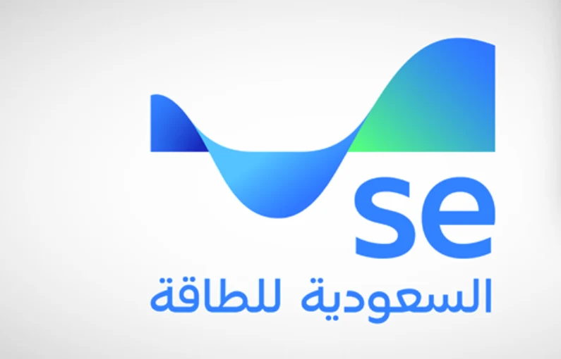

随着"2030愿景"进入关键实施阶段，沙特正以前所未有的力度推动经济多元化与能源结构转型。作为这一进程的核心力量，原沙特电力公司（SEC）于2026年2月25日召开的临时股东大会上，高票通过了将公司更名为沙特能源公司（Saudi Energy Company）的议案。更名后，业务范围从传统的发电、输配电扩展至建筑工程、工程技术咨询、水处理、房地产、教育及科技研发等领域，为中国企业打开了多维度、深层次的合作窗口。
本文系统梳理沙特能源公司扩大业务范围背后的商机和供应商注册全流程，并给出长远布局建议，助力中国企业把握这一历史性机遇。

万亿级蓝海市场：沙特能源转型商机规模几何？
沙特正经历一场前所未有的"资本支出超级周期"。根据高盛2024年8月发布的研究报告，沙特预计到2030年在六大战略领域投资1万亿美元，其中约73%流向非石油部门，远超此前预测的66%。清洁能源领域预计将获得2350亿美元资金，较此前预测的1480亿美元大幅上调，主要因沙特将其2030年可再生能源产能目标提高一倍以上。沙特计划到2030年实现100至130吉瓦的可再生能源总装机容量，具体取决于电力需求增速。
在输配电领域，据GlobalData 2026年3月发布的中东电网投资报告，沙特全面启动输配电网络升级计划，2025至2030年间投资规模可观，其中大部分资金用于输电骨干网和配电系统现代化。这项包含130座高压变电站、约1.4万公里输电线路的宏伟工程，是沙特历史上最大规模的电网现代化工程。
对有志于出海的中国企业而言，这绝非纸上蓝图，而是真金白银、持续释放的历史性机遇窗口。
沙特能源公司业务扩展：全链机遇有哪些？
沙特电力公司（SEC）于2026年2月正式更名为沙特能源公司（Saudi Energy Company，简称SE），并发布全新品牌标识，标志着其在国家能源生态系统中的战略升级——涵盖储能系统开发、电网可靠性提升以及能源转型推动等关键职能。其新修订的经营范围覆盖了前所未有的广度。此前中国企业多聚焦于电力设备供应和EPC总承包两大传统赛道，但更名后的沙特能源公司释放的机遇远不止于此。
一、新增业务板块及对应新机遇
以下为更名后沙特能源公司部分新增业务板块及其释放的新机遇：
| 新增业务板块 | 具体内容 | 中企新机遇 |
|---|---|---|
| 建筑工程 | 公用工程项目建设、电气装置安装 | 除EPC外，还可承接设计、施工管理、监理咨询等细分工程服务 |
| 工程技术咨询 | 建筑设计、工程活动及技术测试与分析 | 工程设计外包、技术方案咨询、检测服务；从单纯施工向产业链上游延伸 |
| 储能系统 | 电网级电池储能系统（BESS）开发与运营 | 储能设备供应、系统集成、项目开发与运维（中企已斩获多笔大额订单） |
| 水处理（能源协同） | 为能源目的收集、处理及分配水 | 海水淡化设备供应、水务EPC、节水技术（以大型电站配套项目形式参与） |
| 科技研发与教育 | 自然科学和工程领域的技术研发 | 联合实验室共建、数字化解决方案、技术转移与本地人才培养 |
说明：电力设备供应和EPC总承包属于原有传统赛道，并非更名后新增板块，中企可继续深耕（详见后文）。
二、传统赛道：继续深耕
（一）电力设备供应赛道。特变电工于2025年8月收到沙特电力公司中标通知，被确定为SEC超高压、高压电力变压器及电抗器本地化采购项目中标单位之一。根据招标文件，具体执行量不低于中标量的70%，中标总金额约164亿元人民币（按执行量70%测算，金额约为115亿元），执行时间为7年（2025-2032年），创中国输变电设备海外单体订单纪录。公司同时表示将在沙特建设变压器、电抗器制造工厂，实现相关产品的本地化生产及供应。
此外，2025年12月，特变电工中标沙特电力公司Namria 380kV变电站EPC项目，合同金额约13.6亿元人民币。多家中国电表企业成功入围沙特电力公司2025年合格供应商清单，彰显中国智能电表企业的技术实力和本地化适配能力。
（二）EPC总承包赛道。山东电建三公司承建的沙特卡西姆、塔伊巴两大EPC项目于2026年5月8日实现GT11机组成功并网发电，装机容量各达1800兆瓦；其承建的沙特阿尔加特600MW风电EPC项目首台风机于2026年3月并网发电。
三、新增赛道：更多机遇
（一）储能赛道（爆发式增长的战略新机遇）。2026年4月22日，沙特电力采购公司（SPPC）启动第二批电池储能系统招标，总容量3GW/12GWh，含6个500MW/2GWh项目，采用BOO模式。中企已抢占先机：海辰储能与SEC、阿尔法纳集团签署1GW/4GWh储能合作协议，金额3.62亿美元；多家中国企业入围SPPC首批储能项目资格预审。需要指出的是，储能设备供应商通常还需完成产品技术认证及POC测试等专项流程，企业应提前做好技术储备。
（二）工程技术咨询赛道。新章程纳入建筑设计、技术测试与分析，中企可从纯施工向设计、咨询、检测等产业链上游延伸。
（三）水处理赛道。依托大型电站配套海水淡化设施（如Hajr电站日产3.4万立方米），中企可切入设备供应与水务EPC。
（四）科技研发与联合实验室赛道。中企可通过联合实验室、数字化方案、技术转移等模式与沙特能源公司深度合作（如中电丰业已在沙特成立电解槽合资公司）。
从外国供应商到产能落地：设备物资类中企的长远布局建议
成为沙特能源公司的注册外国供应商，只是进入沙特市场的第一步。对于不同类型的中国企业，后续战略重心应有所区别：
工程服务类企业（EPC承包商、设计咨询、运维服务等）需要在沙特本地组建项目团队、执行现场作业，其"落地"更多体现为建立本地实体、获取施工资质、培养本地化团队。
设备物资类供应商（变压器、储能系统、电表、电缆、化工品等制造商）则面临一个更深远的选择：是长期依赖出口贸易，还是在沙特直接建立产能、实现本地化制造？
对于设备物资类供应商，从"出口"升级为"本地产能"，是打开沙特乃至中东市场的战略性一步。这一布局的逻辑在于：
一是本地化政策的硬性要求。沙特政府及大型业主在招标中日益强调"本地含量"（Local Content），沙特能源公司等业主在评标中对本地制造商给予显著加分，部分项目甚至只向本地注册的制造商开放。单纯依靠出口，将在竞争中处于劣势。
二是供应链安全与成本优势。在沙特设厂可规避长途运输的高昂物流成本、关税壁垒以及交付周期的不确定性，同时贴近业主需求，实现快速响应和售后服务的本地化。
三是辐射周边市场的战略支点。沙特地处亚非欧十字路口，是中东最大的电力市场和经济体。以沙特为制造和物流基地，可便捷地向叙利亚、伊拉克、约旦、埃及、黎巴嫩等战后重建或基础设施薄弱的国家出口设备与服务。
四是中资企业已有成功先例。特变电工在拿下沙特电力公司超百亿变压器订单后，随即在沙特布局本地化生产。据行业分析，其在吉赞工业区投产的变压器工厂具备可观产能，不仅服务于沙特国家项目，还可承接周边国家订单。这种"以产能换市场、以本地化赢长期"的模式值得借鉴。
中国设备物资企业在沙特电力市场的成功路径，正沿着"从出口贸易到本地建厂，从设备供应商到综合服务商"的轨迹升级。完成供应商注册只是起点，真正构建护城河的是在沙特扎下根、实现本地化制造与辐射能力。
沙特能源公司供应商注册全流程
外国供应商完全有资格申请注册为沙特能源公司的供应商，沙特能源公司的官方声明明确欢迎"王国境内外"的供应商和制造商参与。成功完成供应商注册是企业承接项目的首要前提。
注册所需核心材料包括：商业登记证、经审计的财务报表、ISO 9001等质量体系认证、公司简介与项目经验、授权签字人文件。具体注册流程为：确定业务类别 → 访问供应商门户创建账户 → 上传文件并提交 → 跟踪审核并补充材料 → 获得供应商编号。企业需在提交前确保文件完整并符合规范要求，因注册材料较为复杂，可考虑寻求专业机构协助文件预审和全流程代理注册。
需要特别注意的是，供应商注册只是第一步。注册成功后，企业若想参与具体项目，还需进一步通过产品技术认证或项目专项资格预审，具体取决于参与项目的类型。注册成功后须持续关注招标动态，真正将"资质"转化为"订单"。
结语
在沙特能源领域，中国企业的竞争优势已经得到了沙特业主的高度认可，是时候将竞争优势转化为市场成果了。
沙特"2030愿景"与共建"一带一路"倡议高度契合，从项目合作到能力共建，从市场进入到产业扎根，中沙合作正不断走深走实。完成沙特能源公司供应商注册并推进本地化产能落地，正是中国企业深度参与这一历史进程的关键两步。
原始来源 / ORIGINAL SOURCE：微信公众号文章（点击查看原文）